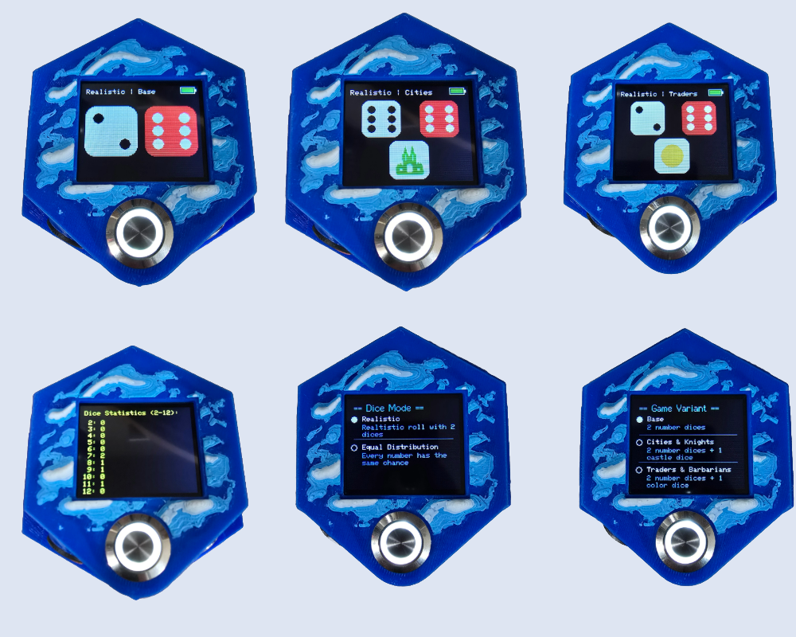

CATAN Dice Firmware Installer
Click the button below to install the latest firmware onto your ESP32 C3 Super Mini.
⚠️ Important: Before flashing, hold down the BOOT button on your ESP32-C3,
then briefly press the RESET button (or unplug/replug the device).
This will put the ESP32 into bootloader mode so it can be flashed.
Make sure your ESP32 is connected via USB and drivers are installed.

Preview of the CATAN Dice in action – multiple game modes, statistics and more.